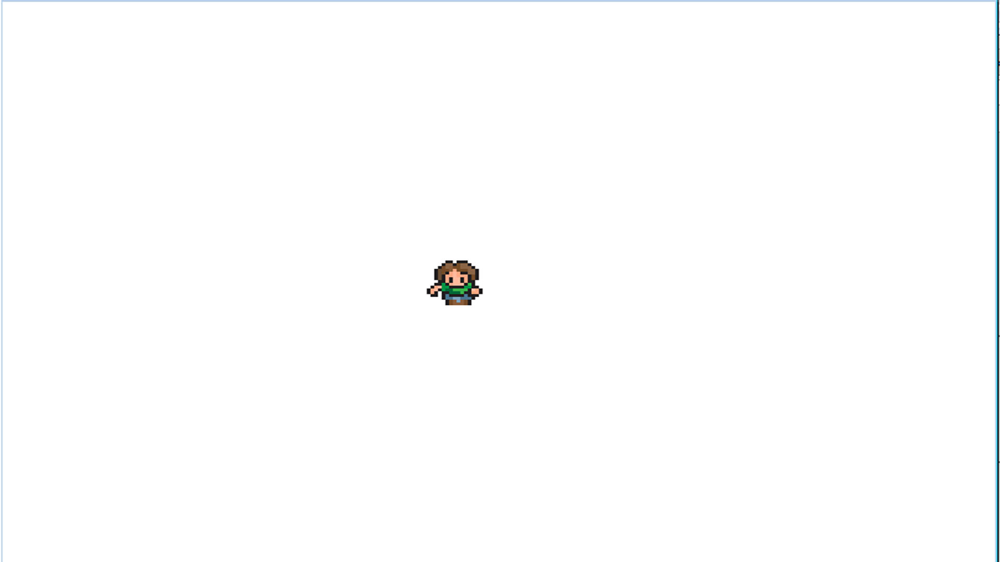
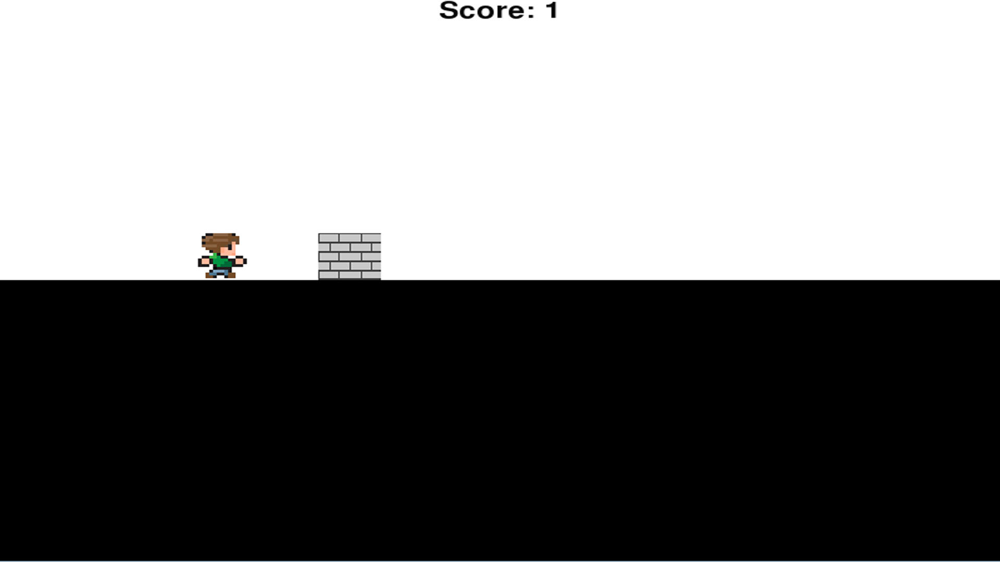
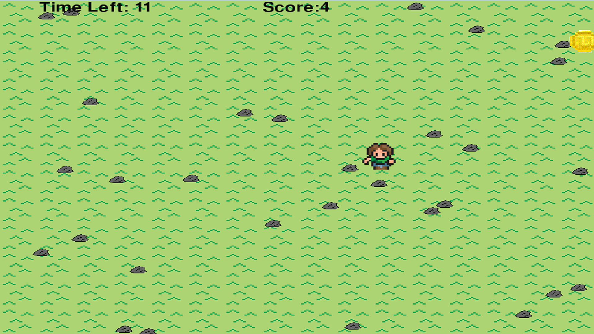
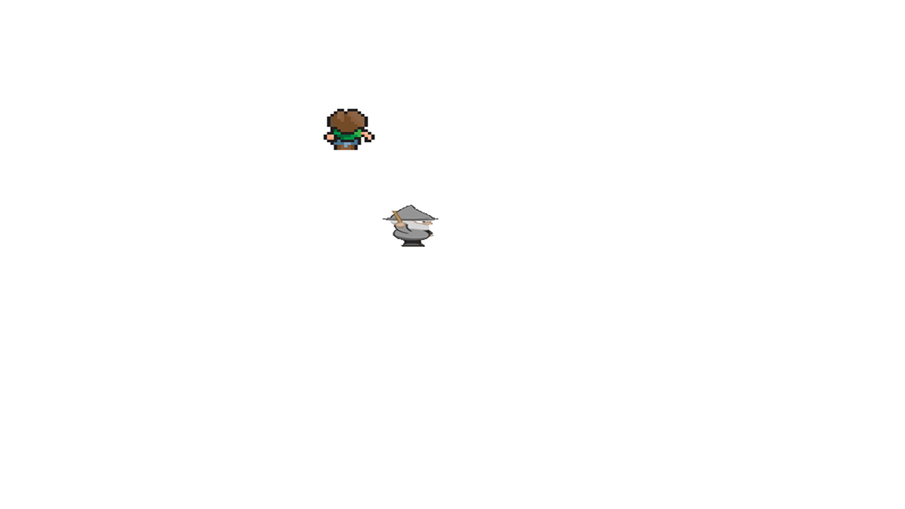
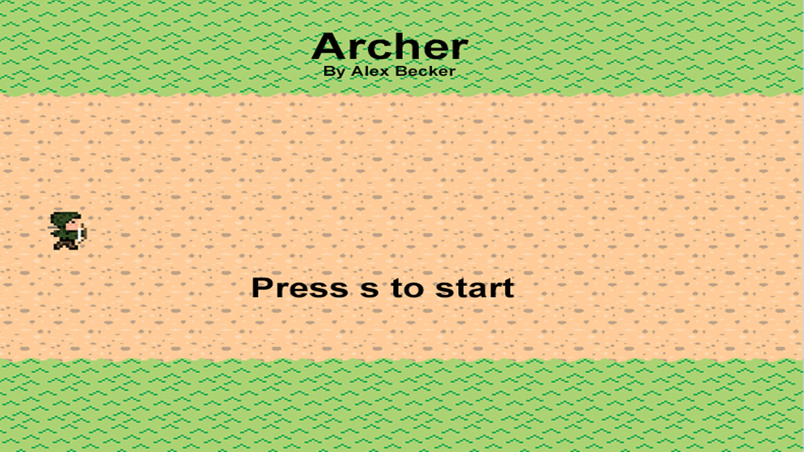

Python Content
Unit 1: Basics

Unit Description
In the first unit, we learned about variables, how to change variables, using user input, and printing things on the screen. Then we used classes and methods with pygame.
Concepts Learned
- Using variables
- User input
- Classes and methods
Unit 2: If Statements

Unit Description
In the second unit, we learned how to use if statements and also if elses.Then, we learned how to use nested ifs. We also used collision in this unit.
Concepts Learned
- Ifs and if-elses
- Nested ifs
- Collision
Unit 3: Loops

Unit Description
In the third unit, we learned how to use loops to repeat something a certain amount of times. Then we learnewd more about loops, strings, and methods. We also used nested loops.
Concepts Learned
- Loops
- Nested loops
- Loops, strings and methods
Unit 4: Lists

Unit Description
In the fourth unit, we learned how to use lists to change costumes. Then, we used lists, loops, and ifs together to use ground tiles to draw different types of ground.
Concepts Learned
- Lists for costumes
- Lists for multiple objects
- Using ground tiles
Python Final Project

Project Description
My final python project was called Archer. In the game, you can move an archer up and down with the arrow keys and press space to shoot arrows. You have to hit the enemies coming at you with the arrows to stop them. If an enemy passes you or hits you, it is game over. To pass the first level, you have to hit 10 enemies and then you have to hit 15 more enemies to pass level 2 and win the game.